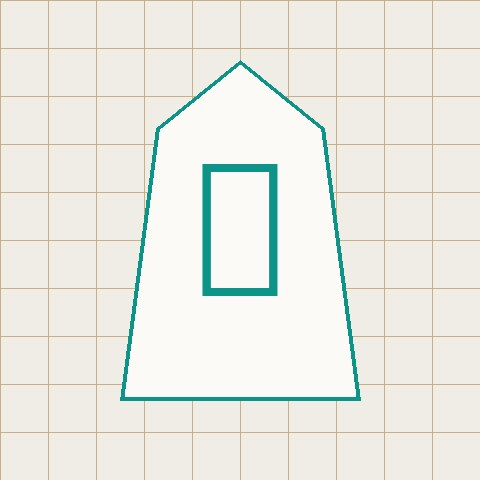

\begin{theorem}
@mako.log
shogi lines, quantum states, and whatever's on the timeline. notes on the technical side, a blog for everything else — 将棋 · games · anime · netslang · crypto & |ψ⟩.
% browse by topic
shogi · gaming · anime · netslang · math · quantum · security